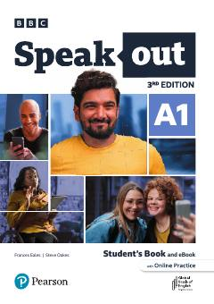

SAIngliz tilini boshlang'ich A1 darajada o'rganish uchun mo'ljallangan zamonaviy darslik.
Ushbu kitob ingliz tilini A1 boshlang'ich darajada o'rganuvchilar uchun mo'ljallangan bo'lib, asosiy grammatika, lug'at boyligi va muloqot ko'nikmalarini rivojlantirishga yordam beradi. Kitobda turli qiziqarli mavzular, kundalik muloqot stsenariylari va amaliy mashqlar keltirilgan.